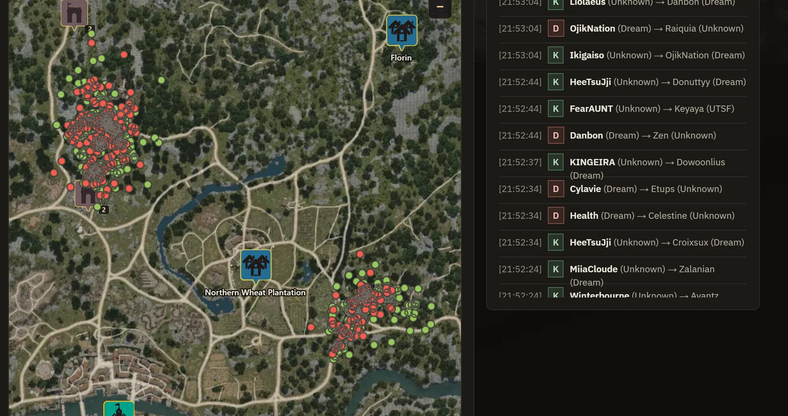

Seer
Every kill, seen. A Windows app that records a node war as it happens and sends it to Athena.

Athena could already turn a scoreboard into stats, but a scoreboard only says how many kills each player had, not who killed whom or where. Seer fills that gap. It runs on the PC of anyone in the war and records each kill and death as it happens, with the guild and the place.
A live kill feed
Every kill and death appears as it happens, with the guild and a running alliance and enemy K/D, so officers can see how the war is going while it's still being fought.
Fix a whole war in one click
If a name or guild is read wrong, correct it once and every row of the war follows. Quick fixes handle the common cases, like swapping killer and victim or picking which column is the guild.

Every kill on the map
When the war ends the recording uploads to the guild's page on Athena, where each kill sits at the place it happened. The map can be shared with one link, and no account is needed to open it.

How it's built
The window is a Neutralinojs app with a JavaScript interface, and a Python engine does the capture. Each kill is counted once: split messages are put back together and repeats are dropped, even when a VPN or a traffic accelerator shows the same traffic twice. Events upload to Athena in batches of 50 or every 10 seconds. If the connection drops, nothing is lost: events are saved to disk and retried every minute, and a war that ends offline still uploads after a restart. It ships as a single portable EXE that bundles its own Python runtime, and it can sit in the tray during the war.